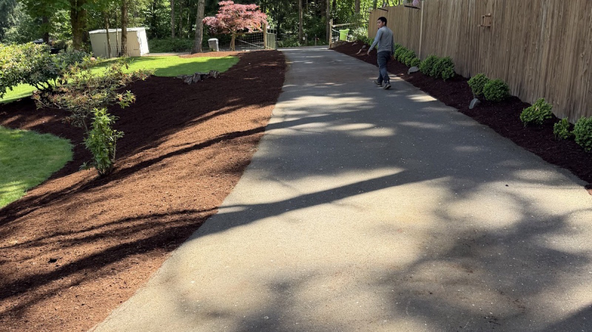
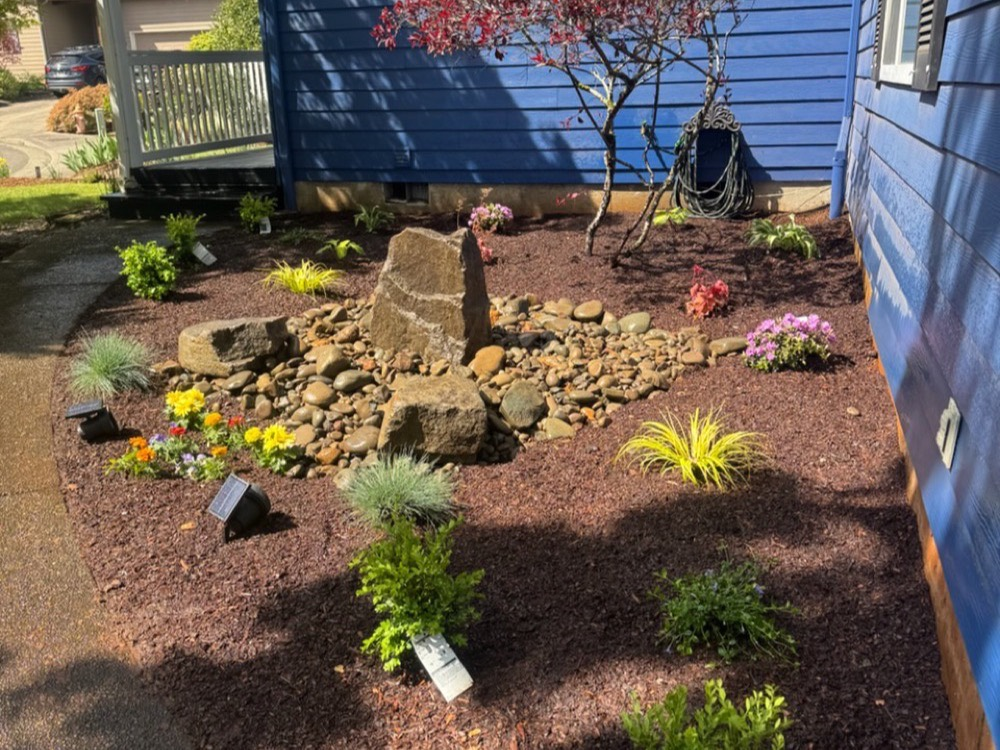
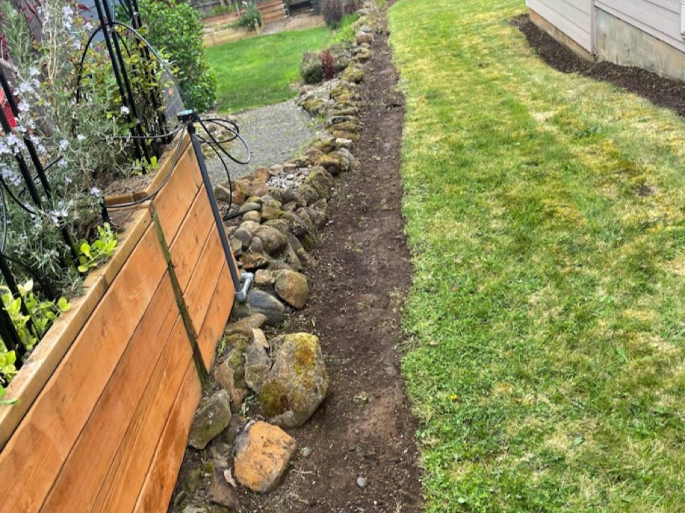
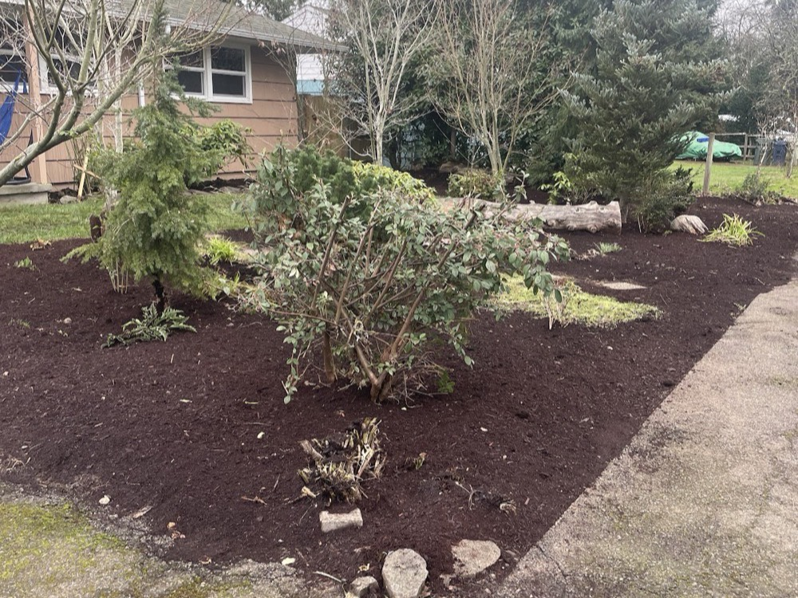
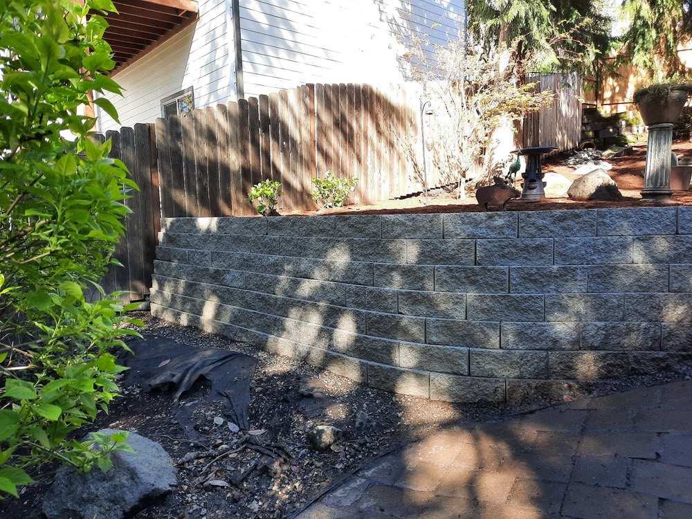
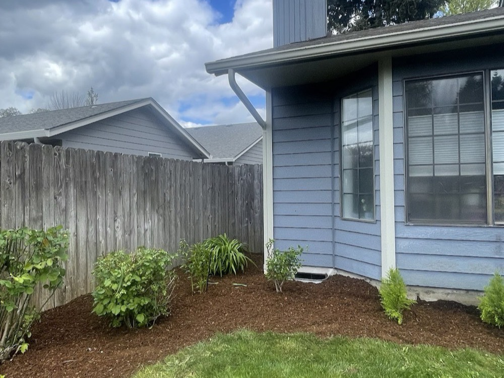
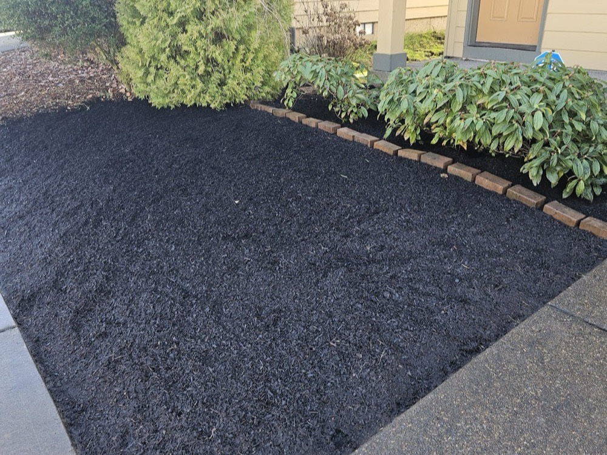

Landscaping & Yard Care in Salem, Oregon
From full yard cleanups to retaining walls and sod renewal, Jose's Lawn Services turns Salem yards around fast — and keeps them looking finished all year.

Called Sunday · finished by morningA full-service crew for the whole property
Five things Salem homeowners call Jose's for — done start to finish, cleaned up after, and built to hold.
Yard Cleanups
Overgrown, neglected, or just end-of-season — a full reset that gets the whole yard back to finished in one visit.
Landscaping, Walkways & Pathways
New beds, plantings, borders and stone walkways that reshape how the property flows and looks from the street.
Retaining Walls
Stacked-block and natural-stone walls that hold a grade and turn a slope into usable, good-looking yard.
Sod Renewal
Tired, patchy lawn taken out and replaced with fresh sod for an instant, even, green result.
Pressure Washing & Gutter Cleaning
Driveways, walks and gutters cleared and cleaned — the finishing details that keep a property sharp.
Real Salem yards, start to finish
Every photo is a Jose's project — beds, walls, rock features and fresh sod across the Willamette Valley.






What Salem homeowners say
"I called Jose for an estimate on Sunday and woke up this morning to a beautifully finished full yard."
"They got here right at 9 am and stayed busy working till 9 pm."
Salem & the Willamette Valley
Based in northeast Salem, Jose's crew keeps yards finished across the mid-valley — from a Sunday-estimate rush job to a full seasonal maintenance route. If you're nearby, reach out for a free estimate.
Request a free estimate
Tell us what the yard needs — a cleanup, new beds, a retaining wall, fresh sod, or a regular route — and we'll get back to you.